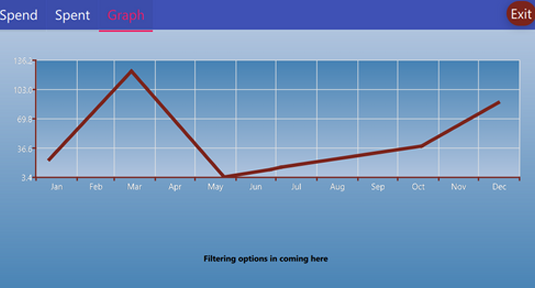
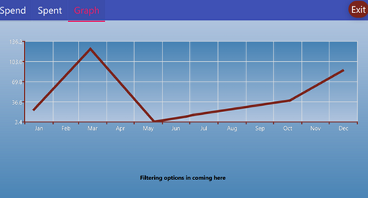

MultiMiniApps
I embraced the challenge of crafting an Android application using C++ with QT Creator, breaking away from the conventional
Java-based approach. My 'Swiss Army Knife' app offers a diverse range of tools, from a resistance calculator to entertaining
mini-games. Throughout the development, I also explored Qt's capabilities for Android, gaining valuable experience along the
way. The spaceship game, for instance, leverages the phone's gyroscope for an immersive touch.
Drone scanner 

In my M2 first-semester project, I collaborated with a team of five to configure and scan a field with a drone, while two team
members focused on the landing process. As a programming enthusiast, I developed three programs to generate distinct drone
trajectories based on mathematical research. To ensure accuracy, I used Folium, a user-friendly map library, to display calculated
coordinates before transmitting them via a Wi-Fi transmitter. The drone's height and camera angle were vital in determining the
flight path, enabling various scanning patterns like spiral scans. This project allowed us to optimize the drone's performance in
locating and reaching targets effectively.


Lego Mindstorms
In the same year, I had an exciting opportunity to work with Lego Mindstorms robots, programming them for various tasks. I
successfully navigated an unknown labyrinth and guided the robots out of it. Two robots, equipped with a gyroscope and a light
sensor, were particularly notable. The gyroscope enabled precise turns for one robot, while the other utilized the light sensor to
follow a black line on a white surface. These experiences allowed me to explore robotics and develop skills in programming and
integrating sensors, enhancing my problem-solving abilities and adaptability in different scenarios.


© copyright sami benmaammar
 
